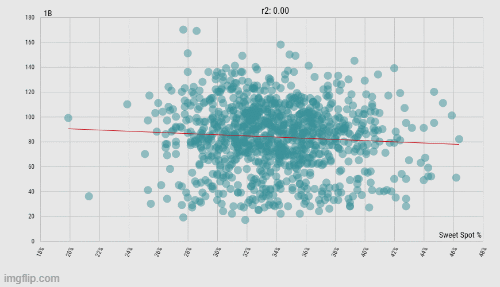
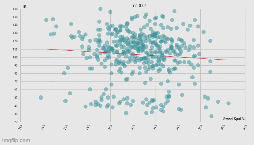
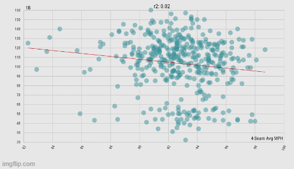

Is FIP Overrated?
by A. Kline
Posted on 07/01/2022
The Pittsburgh Pirates have been something of a hapless franchise for decades now, but their fans fondly remember that stretch of time in the mid-2010s when they were legitimate contenders. They made the playoffs in 2013–for the first time in over 20 years–thanks in large part to having some of the best pitching in the league. All of Pittsburgh’s primary starters had an ERA of less than 4, a rare sight for any team, even in the National League.
That same season, pitcher Edinson Volquez posted a 5.71 ERA for the Padres and Dodgers, and his WAR of -2.3 ranked him in 678th out of the 679 pitchers to appear that season. Simply put, things were not looking good for him. But then the Pirates signed him to a one-year deal, and in 2014 he became the most valuable starter on their already-impressive staff. Though lay fans might have seen this deal’s success as the Pirates orchestrating some kind of witchcraft, those in the sabermetrics community was not as surprised. After all, Volquez’s FIP was much lower than his ERA, indicating his skills as a pitcher were undervalued.
FIP, which stands for field independent pitching, is just one among many examples of what are called defense-independent pitching statistics (DIPS). As the name suggests, this family of metrics looks at pitchers by analyzing what they have most control over: balls that can’t end up in a fielder’s glove, such as home runs, strikeouts, and walks. FIP is arguably the most famous of these metrics, and is calculated by the following formula:
FIP = (13*HR + 3*BB + 3*HBP - 2*K)/IP + C
where C is a constant added such that leagueAvgFIP = leagueAvgERA
There are a number of variations to this formula, including many without the league adjustment tacked on here. There certainly was thought put into this formula–home runs are obviously more damaging to give up as a pitcher than walks–and despite its overall simplicity, it is surprisingly effective at evaluating pitchers in ways more normal metrics cannot.
The reasoning behind DIPS goes that pitchers have little to no effect on balls in play, so using such outcomes to make judgements about a pitcher’s skill, at least on the same level as balls not in play, is about as logical as judging his skill on how high he wears his socks. This, again, makes sense–why should we blame a pitcher for giving up a string of base hits after poor play from his defense as much as we blame him for giving up back-to-back home runs due to his own poor pitching? The idea that different batting outcomes bear different weight is not new–it is the foundation for cornerstones of batting statistics like slugging percentage, OPS, and wOBA, so why should pitching statistics be any different?
Indeed, defense-dependent outcomes, much like the creators of DIPS suggested, seem to be unreliable. A pitchers’ stat measuring exactly this, called batting average on balls in play (BABIP), is famously inconsistent from year to year, so much so that it has become almost synonymous with pitcher luck in the sabermetrics community. But just how inconsistent is BABIP? We should expect the luck-based metric to pale in comparison to the skill-based FIP, because a pitcher’s skills are much more consistent over time than their luck. But is this really the case?
If we measure the inconsistency of a metric by the average percentage change year-to-year, then the answer, as it turns out, becomes even murkier. There appears to be no significant difference between the inconsistency of FIP and BABIP for the same pitcher, or in other words, they vary at roughly the same magnitude. This contradicts the assertion that FIP, as a skill-based stat, should be more consistent than BABIP over the same time period because a pitcher’s skills are much more consistent over time than their luck. Interestingly, though the difference is of course insignificant, the data does seem to point to FIP actually being more variable than BABIP for a number of pitchers. A sample of data exemplifying this surprising relationship between the volatility of the two metrics is below.
| Pitcher (years 2013-2021) | Avg. Yearly Δ in FIP (%) | St. Dev. (pp) | Avg. Yearly Δ in BABIP (%) | St. Dev. (pp) |
| Gerrit Cole | 23.1 | 13.7 | 10.0 | 8.0 |
| Patrick Corbin | 25.1 | 16.0 | 7.6 | 7.9 |
| Johnny Cueto | 18.3 | 14.9 | 17.2 | 12.8 |
| Kevin Gausman | 10.1 | 8.2 | 10.2 | 4.4 |
| Wade Miley | 14.7 | 11.1 | 7.6 | 5.3 |
| Charlie Morton | 13.8 | 8.9 | 9.7 | 7.5 |
| Max Scherzer | 13.2 | 12.3 | 14.2 | 9.1 |
| Adam Wainwright | 18.9 | 27.7 | 8.6 | 7.8 |
(Data: Baseball-Reference.com)
So strike one for FIP? Well, maybe, but perhaps these results should not be taken too seriously. Firstly, even though using percentage change to compare the volatility of two completely different units is much better than comparing their raw change, it may not be perfect either. For example, an ERA going from 3.2 to 3.6 and a batting average going from .280 to .315 are both increases of 12.5 percent, even though the latter change is much more eye-popping. In other words, changes in batting average can have bigger impacts than changes of the same size in ERA-like statistics (to which FIP belongs), which percentage change does not catch. Secondly, when supporters of FIP call the statistic reliable, they are referring more to its ability to predict future performance than its year-to-year consistency. So let’s call it a half-strike.
Proponents of FIP, and DIPS more generally, also love to point to the lack of control pitchers have over balls in play. But how real is this lack of control? If pitchers have no control over balls hit into play, then from a pitching perspective, there is no difference between a single, double, and triple. As it turns out, this is an extremely generous assumption to make.
When looking at qualified hitters from all full seasons in the Statcast era (n = 999), a higher sweet spot percentage is correlated with an increase in doubles, but not with singles. (Data: Baseball Savant)
For starters, there does seem to be a difference in the quality of contact made between singles and doubles (because of sample size issues, I did not look at triples in comparison to singles). Since the beginning of the Statcast era (excluding the pandemic-shortened 2020), an increase in batters’ sweet spot percentage sees no significant change in the number of singles hit, but a significant (p < .00001) increase in the number of doubles hit. So if FIP tries to level the playing field (no pun intended) for the pitcher by only considering his one-on-one matches with the batter, then why should it ignore the batter’s significantly better-hit balls that just happen to fall short of the outfield fence? Strike two against FIP.
But wait, you might say, how can we nullify the idea that pitchers have no control over balls in play by citing statistics from the batter’s side? After all, years of exhaustive baseball research have shown that the pitcher and batter are indeed two separate people. Fair point, strike half-revoked. So let’s look at sweet spot figures for pitchers instead.
The same data as above, but taken from the pitchers’ perspective instead of the batters’ (n = 429). Interestingly, now singles are negatively correlated with an increase in sweet spot percentage. (Data: Baseball Savant)
As you would imagine, this whittles down the sample size by quite a bit, but now we’re seeing something even more interesting. For pitchers, an increase in sweet spot percentage allowed is significantly correlated (p = .038417) with a decrease in singles allowed, while being significantly correlated (p = .003332) with an increase in doubles. So much for that lack of agency pitchers have on balls in play. Strike three.
But wait, you cry, for a pitcher’s sweet spot allowed depends too much on the hitters they face to be truly under their control! Again, that’s actually a fair point, so I'll take back this strike partially as well. At the end of the day, wasting away debating the line between what is and isn’t in the pitcher’s control will likely get us nowhere, so let’s look at something that is under the pitcher’s control by every reasonable definition: how hard they throw.
The same set of pitchers as above, but now their average 4-seam fastball speed vs. the number of singles and doubles allowed. Both show a negative correlation, but one is stronger than the other. (Data: Baseball Savant)
Admittedly, there is a statistically significant relationship (p = .003332) between harder-thrown 4-seam fastballs and fewer singles allowed. But the negative relationship between those same fastballs and doubles (p < .00001) is the strongest correlation we’ve seen yet. The extent to which pitchers have agency over balls in play is still up for debate, but the argument they have no agency at all in such situations should be dead and buried at this point.
But are these low p-values really enough to discredit DIPS entirely? After all, none of these graphs actually show a crystal-clear trend, which is arguably more important in proving a point to the masses when using linear regression. God gives his lowest p-values to his largest sample sizes, I guess. On a more fundamental level, though, just because some level of pitcher control over different hits in play can be proven does not mean stats like FIP cannot have their purpose. As stated earlier, it can be useful to highlight cases of pitchers whose performances are heavily influenced by their defenses in one way or another. And the very existence of FIP serves as a very important reminder that pitchers should not be judged too harshly by what they have little control over. Had Edinson Volquez not been picked up by the Pirates, who back then had one of the best defenses in the league and were well aware his numbers were drastically affected by hapless defense surrounding him, his career may very well have been over.
Long-time fans of this blog (of which there are probably about three) might have seen the title of this post and immediately thought back to a similar type of post from last May. And that is no coincidence. When I first began brainstorming for this post, I initially planned on calling it “FIP is Overrated” as a more direct homage to the post in question. However, after looking more closely at the data and at how much more redeemable FIP is than WHIP, I knew a more nuanced look was needed. Sure, I may have spent a significant portion of this post attempting to take down FIP (and DIPS in general) through graphs and numbers, but at the end of the day I do not feel fully confident concluding that FIP is overrated, at least not to the extent WHIP is. Do people give it more credit than it’s worth? Absolutely, but that’s par for the course for these sorts of baseball stats. Does its absoluteness cause it to fail at its fundamental purpose? Its lack of park adjustment is a problem, but it's still a breath of fresh air compared to WHIP.
In the future, I hope to see not defense-independent pitching statistics, but more holistic defense-aware pitching statistics. The contribution of DIPS to our understanding of pitchers and their effect on the game of baseball is undeniable, and FIP should be used as a foundation on which to build, not something to be thrown away entirely. So calling FIP overrated without any hesitance or nuance makes about as much sense as saying one-and-a-half strikes and you’re out.